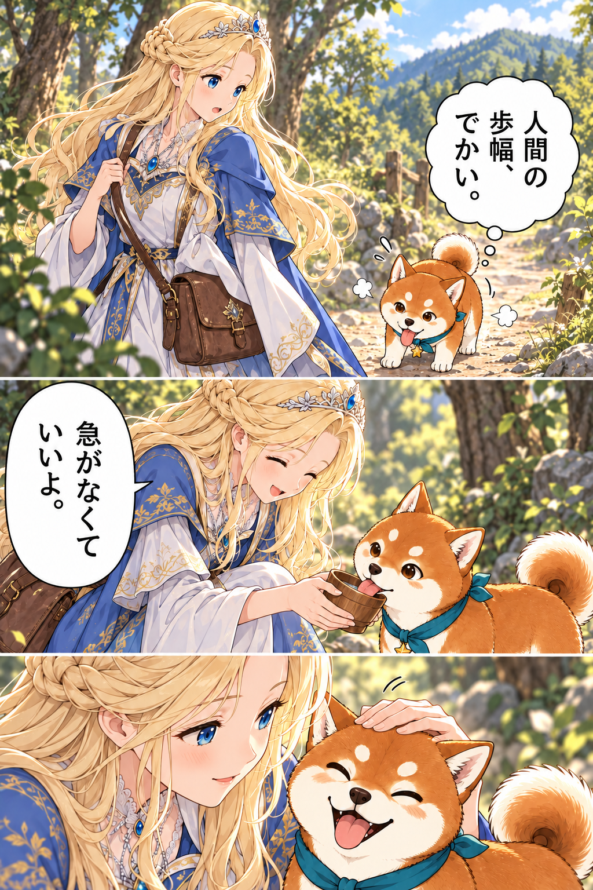
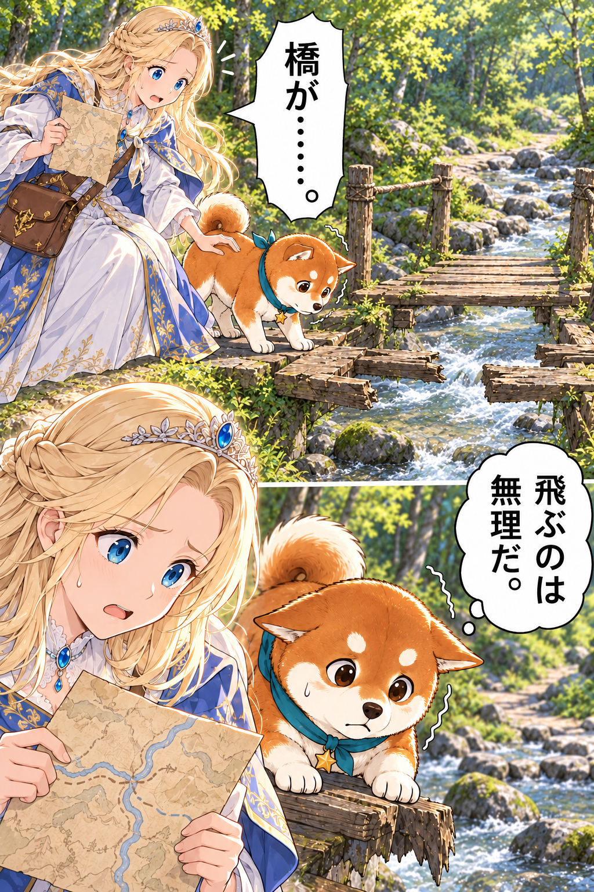
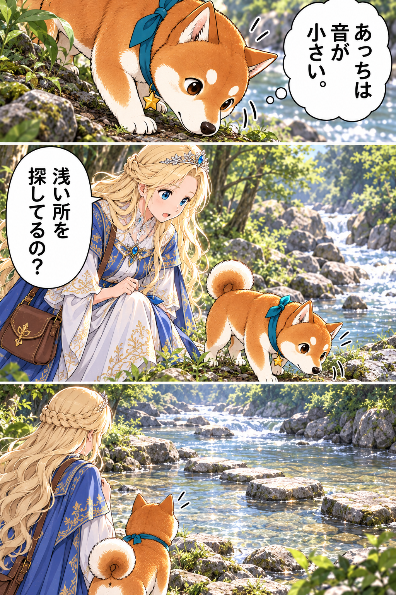
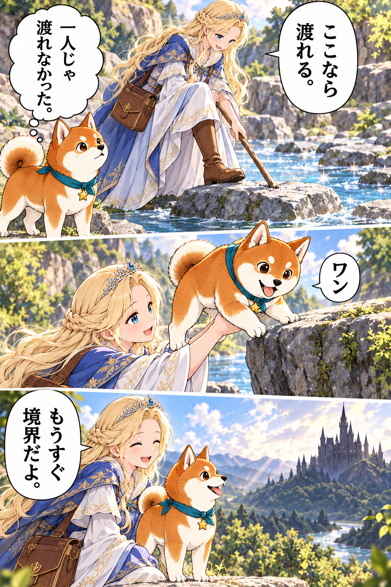

<!doctype html><html lang="ja"><meta charset="utf-8"><meta name="viewport" content="width=device-width,initial-scale=1"><title>第4話 犬の歩幅｜転生したら柴犬だった</title><link rel="stylesheet" href="reader.css"><main><header><small>転生したら柴犬だった。 ／ 導入10話 改稿版</small><h1>第4話 犬の歩幅</h1></header><figure id="scene-01" style="margin-bottom:35px"></figure><figure id="scene-02" style="margin-bottom:130px"></figure><figure id="scene-03" style="margin-bottom:70px"></figure><figure id="scene-04" style="margin-bottom:140px"></figure><footer><nav><a href="../episode-03/index.html">前の話</a><a href="../episode-05/index.html">次の話</a></nav><p><small>第4話 おわり</small></p></footer></main></html>